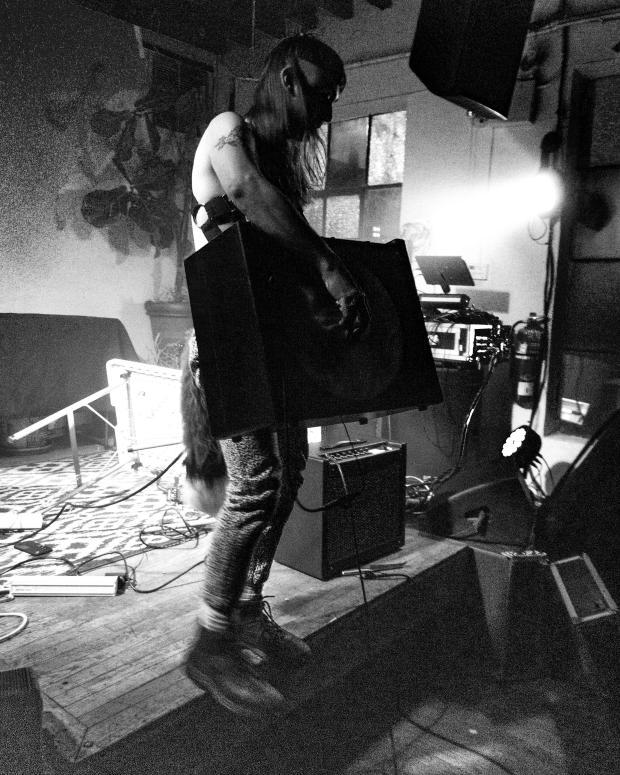

https://dumbdognoise.bandcamp.com/
Animalistic harsh noise from North Carolina.
Amplified knives, collars, and modified electronics generate fur-raising feedback walls and howls through participatory play of pulling on harness chains and kicking kennels.
Don't be afraid to bark.
Don't be afraid to bite.
Listen to the animal inside you.